箭扣-慕田峪全穿游记
从上次爬完慕田峪后半段的野长城之后,听说箭扣长城更难爬,就激起了我的好奇心，早就想来箭扣试下了,这次趁着端午长假来一次 **箭扣+慕田峪**全穿,体验很不错,记录下来 证明我已经是个老司机了~😄
时间临近端午,5月26号还在想端午去哪里玩儿呢,27号决定去箭扣徒步,搜了点网上驴友的徒步路线 28号就背着双肩背包出发了,开始了为期两天的穿越！
出去玩儿赶早不赶晚,省着由于时间原因扫兴,于是决定起早赶头班地铁,我住在13号线地铁🚇回龙观附近,于是5:30起床出发,坐到望京西 然后赶头班的丰宁城际班车(首班6:40 我六点30左右就到了~据说已经发完一班车了~) 然后上车去往怀柔汽车站了(地图上就一站我以为很快,结果开了一个多小时,终于知道城际班车的意思了,真尼玛远~!)
到达怀柔汽车站需要坐公交🚌去于家园, 车很多 我坐的H21～～ 8点30左右的时候到达于家园公交站,然后就得坐H25路去西栅(zha 不念shan~)子村（不建议坐黑车,40拼车真贵,后面要我20仍然没坐哈哈）,可是头班车11:30 现在才9点不到咋办,先吃顿早餐吧,吃的豆腐脑可香了！！！ 吃完一看时间还早
刚好附近有家不错的电影院🎦,正好可以看场电影看的是<<三只小猪🐷>>,因为这个时间是在没啥电影可以挑的了，纯属打发时间~~~
下午1点多一点到达终点站，西栅子5队,附近好多农家院,我找了家问下 100元/晚(尽管店家各种劝我说山里夜晚冷,没带帐篷呆不了,我是一旦做了决定十匹马都拉不回来的那种,我比较有主见,所以完全没听进去哈哈😄), 不过我并没有入住，只是在这吃了顿午饭,顺便了解下路线情况
正好有两个驴友跟我路线一致（绝大部分人都是从北京结开始或者涧口开始,只走一小段，我既然来了肯定是要全穿的），于是我果断决定结伴同行,后面的经历验证了我这个决定是何等的英明 !!!
先附上网上找的驴友的路线图(路线与我基本一致): 西栅子五队->九眼楼->牛角边->慕田峪

吃晚饭下午两点半 我们问老板娘去九眼楼的路 然后我跟另外两个驴友 就顺着小路进入山里开始山地徒步,离长城有一段是山路，我们得在山林中穿越, 山中岔路真多～～～我们听老板娘的遇见岔路就往左走,否则走错了 可能就走到延庆那边去了~~~
走一小段路看见一个指示牌，据另两个驴友分析这个剪头是错的,于是我们没按照箭头的方向走

山里这种小虫子真多~这好像叫千足虫? 好肥美~~~

还在山里面呢,看见这堆乱石离城楼就不远了

山里面的景色,马上就到城楼了!

下午三点半左右 历时一个小时左右到达城楼 ✌️

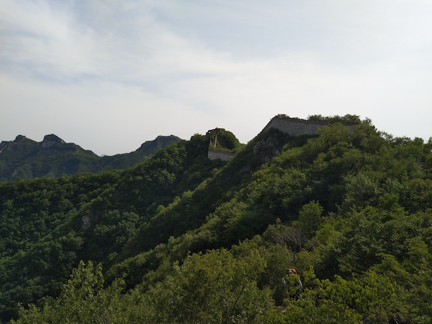
城楼两边的村子
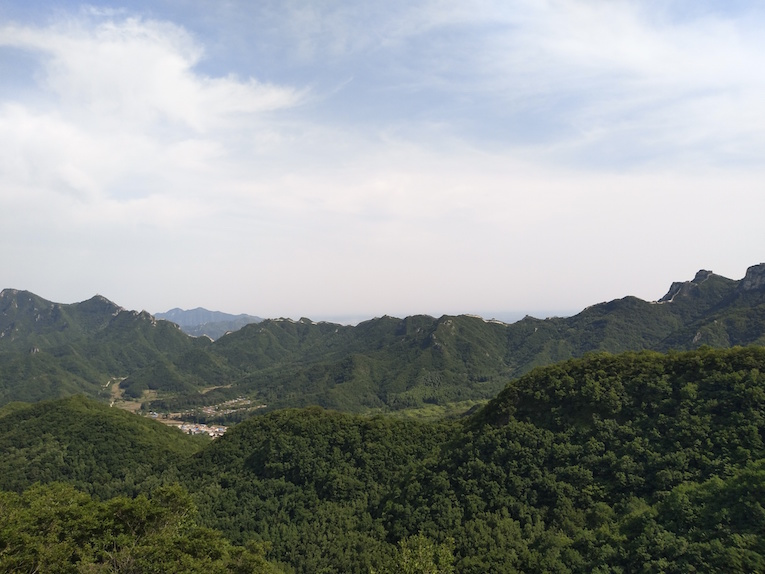

登上的第一座城楼
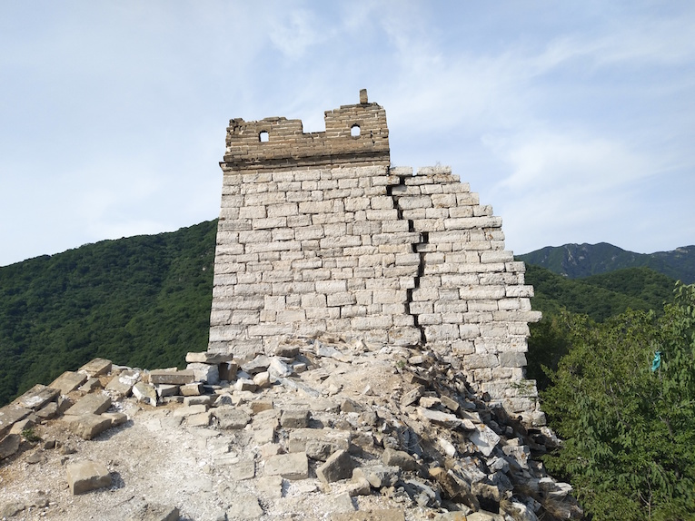
从城楼上远眺 九眼楼 待几分钟稍作休息就前往九眼楼,因为已经4点多了,晚上我们还要原路返回此处城楼在附近城楼露营
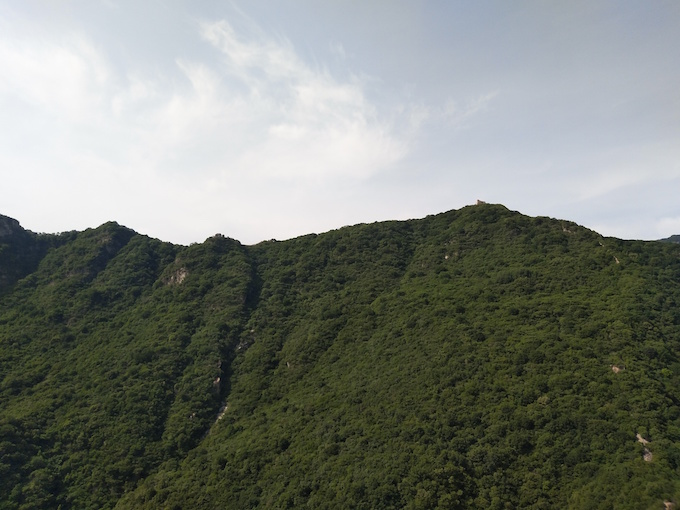
前往九眼楼,我们得抓紧时间 6点以后天就黑的很快了,我们现在还不知道晚上在哪里扎营呢,这个地方因为非常陡峭得有近90度角了得攀岩前行,我就叫它90度，后来我们都这么叫这个地方了~
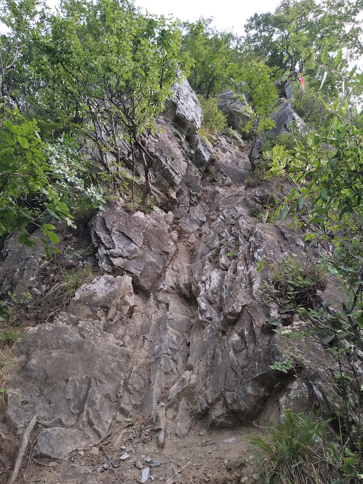

去往九眼楼路上～残破的城墙
九眼楼(四周都是九个眼👀)
九眼楼内
九眼楼往下看有一间小屋子,由于我走的比较快 已经把另外两个驴友甩出好远，我这个好奇宝宝👶 就决定下去一看究竟,等再回到九眼楼正好就可以跟他们俩会和了。
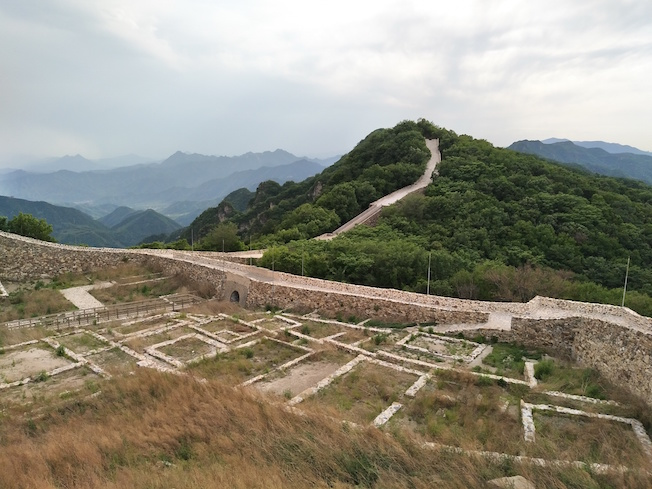
抵达九眼楼下面的小房子🏠, 觉得这个房子晚上在里面露宿挺不错的的,遮风挡雨的,里面空荡荡的
小房子附近的火焰山🔥城堡🏯 😄,上面写着请勿入内,我小犹豫了一下 还是进去了，不知道写这是什么意思,反正管他呢,我百无禁忌~哈哈哈!
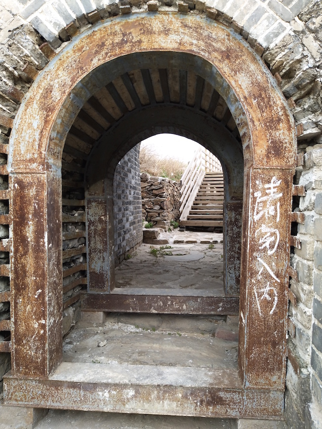
一个当地小伙 从延庆上来的 往回走,他说从九眼楼到山下村子20分钟就可以了~
时间已经很晚了,我们三个人抓紧时间往西大墙附近前行,往回走是下坡所以很快就到我们登上第一座城楼的位置了,此时天已经黑了,天空不断的打雷,开始掉起了雨点,然而我们这时候还没有找到住的地方呢 我们继续往前试着走 寄希望于下座城楼, 果然人品比较好，我们找到了个非常适合露营的地方，不用搭帐篷都可以!!! 此时雨刚好开始下大
我们晚上9点左右开始喝着驴友带的罐装啤酒🍺(尽管我不会喝酒, 主要是一来晚上可以睡个好覺二来也可以御寒) 开始烧烤,我把公司发的和田玉大枣也拿出来吃了,怎一个爽字了得 !!!
这是我们住的地方,还不错吧~得意的笑脸😊
原本打算4点以后天一亮就出发的, 没想到早上4点到6点下着小雨,等我们收拾好近6点半了,正好雨停了,雨后的空气真好 !!! 这是我们今天要走的路线
北京结到九眼楼这段路好多这种桃树
单边路,挺险的,跟我以前的两个驴友
后面这些人基本都是从西大墙上来的

因为早上刚下完雨,云海好美!!!,再次感觉这个运气太好了!!!
到达北京结了,传说中的北京结的标志树已经没了~
mini版北京结上面的树🌲
离开北京结,开始前往鹰飞倒仰
这个悬崖害怕的话可以从旁边绕开,不过可能稍微有点远,再说也不是我性格,决定试一下,再怎么说我也是有过小攀岩经验滴人~得意的表情, 刚开始所有人都打算绕过去,我估摸了一下觉得没问题难度不太大,于是我就做了开路人,三下五除二就上去了,他们看我上去了，也想试下，我就在上面给帮忙做技术指导哈哈😄,再次为自己感到骄傲😹
爬上来了，小歇一会儿,一会儿准备冲刺鹰飞倒仰，传说中比较难爬的一段
可以先看下鹰飞倒仰的路段
注意⚠悬崖边上那个小黑洞,我有点想进去,但是估摸了一下,难度有点大,毕竟我还要工作挣钱糊口，万一出个意外不好,再说没有人敢去，我自己一个人也不敢，就没去了~如果有人想探险一下，可以约我呀,下次一起进去瞅瞅~
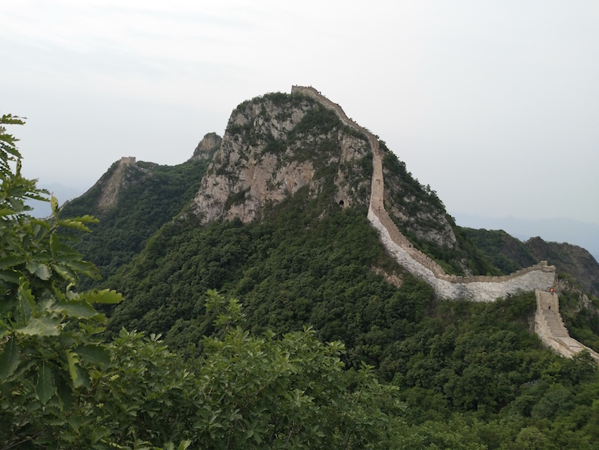
已经见到鹰飞倒仰路牌了
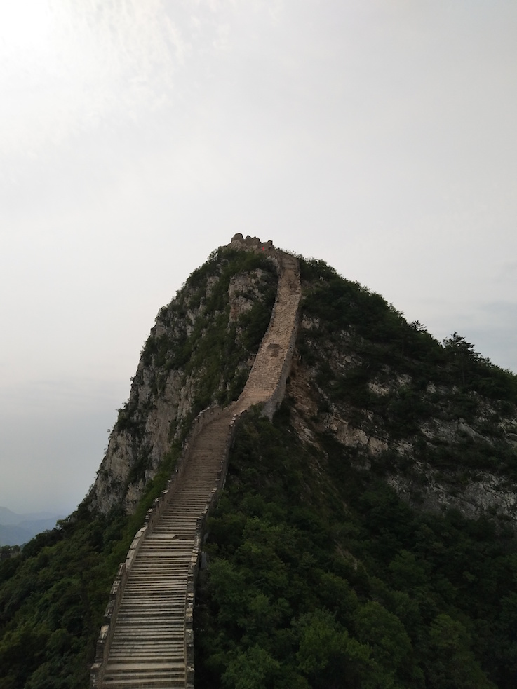
有人在修城楼了,害怕修好了以后就不好玩了,还好我现在过去玩儿了,要想去玩的抓紧喽~
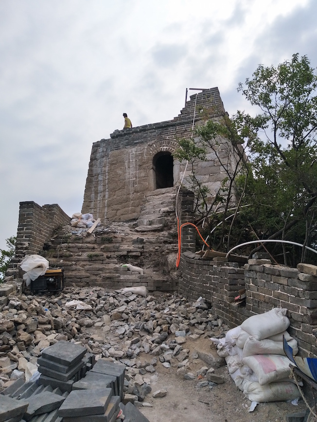
开始下小天梯,大天梯了
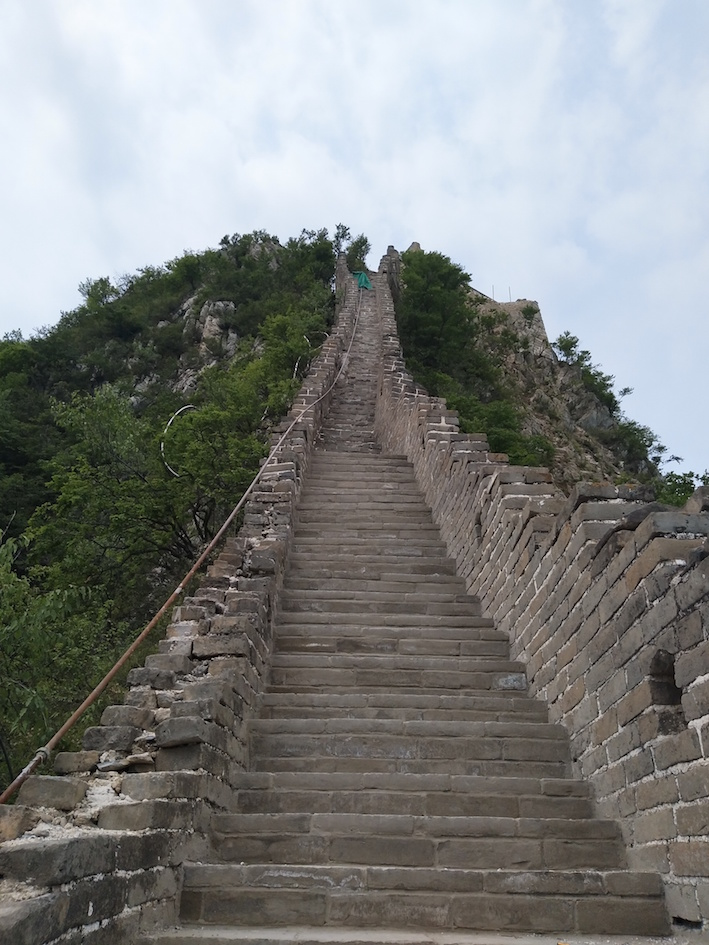
到达将军守关了,我们三个人，我先到的，登上城楼上面一个妹子从帐篷⛺️里面出来,看着我说:“这就我一个人,其他人都不在去爬长城了!” 哎~都怪当时的我太单纯,事后想想这句话是否另有深意呢,害羞捂脸!!! ,看着她把帐篷搭在城楼边上,我好心的叫上驴友当了把雷锋，帮她把帐篷挪下来了,搭在上面太危险了，万一晚上一阵风容易连人带帐篷一起掀飞,再说很有可能晚上还会下雨☔️~大闪电!
前方就是九孔楼了,注意不是九眼楼噢，差一个字，哈哈😄,这有补水的地方，矿泉水10元，饮料15，要是实在缺的话就现在补一下吧,靠近终点更贵了, 矿泉水15元,饮料20元
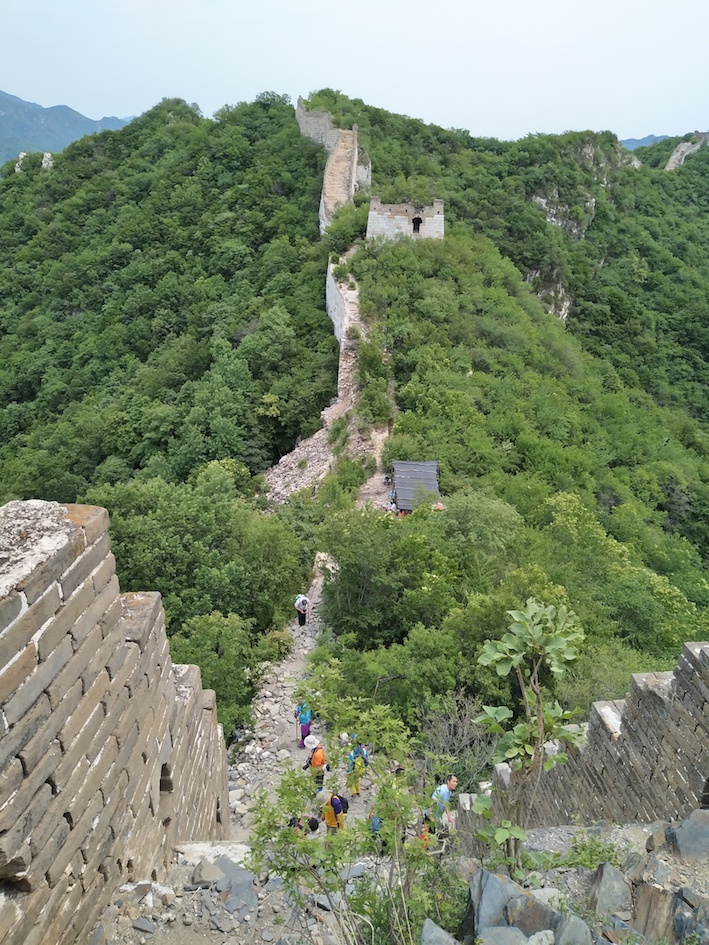

补完一瓶矿泉水，一瓶饮料 后出发前往涧口
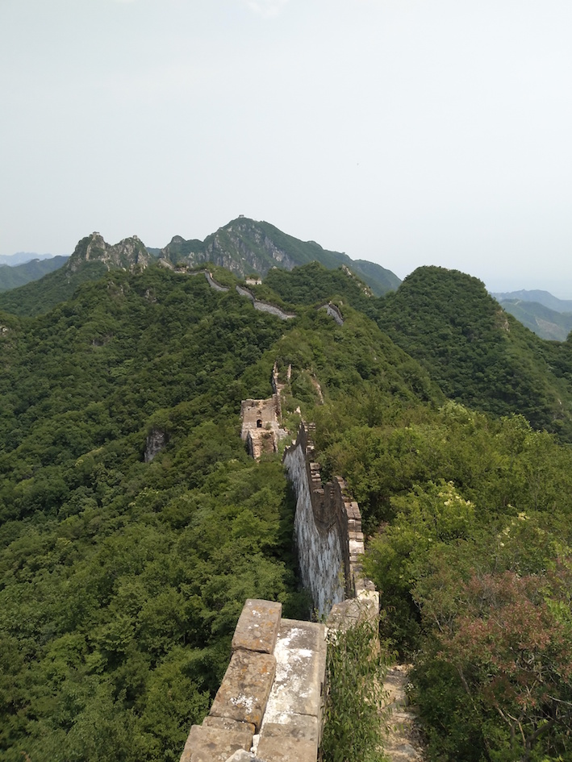
上去就是小布达拉了,这块也有补水可以补一下,此时已经是下午1点了,有个妹子穿着裙子👗从上往下, 我在下面网上爬,画面请自己脑补(我真的啥也没看到)~哈哈😄
远处最高就是正北楼了
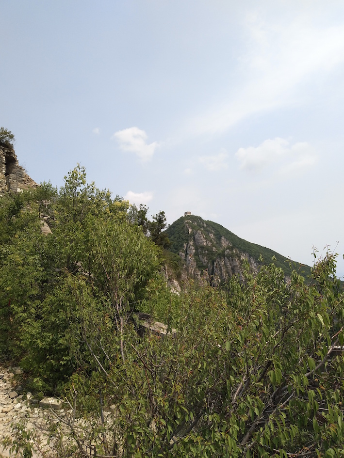
到达正北楼之前 传说中5块钱一位的梯子,哈哈, 你可能已经猜到了,没错！！！我又没走正路 ，果断从旁边悬崖爬过去了,其实真不是差那5块钱,玩的就是心跳💗,就是这个feel~~~倍儿爽
下午3点左右到达正北楼,绝大部分人都把这当终点🏁从旁边小路下去20来分钟就能到达西栅子村了,我目标是全穿从慕田峪下去,于是在这短暂停留了一会儿，就前往箭扣长城的终点牛角边了~~
顺便说一句,原来5元的梯子不止一处，这也有一个,不论是上正北楼还是下到村子里,都得搭下梯子,这个城楼有两处梯子,当然了,对我来说都是摆设,没错 我又爬上去了,当然可以讲价的都,之前就有妹子从5块砍到了3块还是两块的~,这块基本就是终点了，补水超贵的 矿泉水15,饮料20

离开正北楼开始前往 箭扣长城终点,牛角边,最高的地方就是牛角边,从此处看是倒V字型,往下的那条路就是慕田峪的野长城了,离慕田峪长城很近了
下午3点50左右到达牛角边
四点整牛角边开始前往慕田峪长城,此时另外两个驴友已经不见踪影了,我们在小布达拉附近分开的,他们背的帐篷所以有点慢,我着急就先走了,计划正好可以赶上坐916快的末班车回城,慕田峪这段我就比较熟了,刚来北京的时候就先去的八达岭，后来到的慕田峪,我估摸着一个小时左右就能下去,我抓紧时间往下赶了,此时正好4点整
慕田峪长城正好一个小时左右下来了,时间刚过5点
往停车场步行坐公交🚌去怀柔汽车站，赶916末班车,其实有车可以坐到停车场的,不过我看时间还够就选择全程步行，不坐车了，后来在等公交的时候 一个师傅拉着一车人过来了,说10块还是20块来着送到怀柔汽车站,我看价钱还可以，再说我赶车,就拼车走了
总结
这次旅行还挺完美的,也挺有意思的,很难忘的一次旅行,还好在小饭馆碰见那两个驴友，尽管我们没一起到最后,要不然我一个人在长城上过夜现在想想真的好恐怖，晚上还下着雨打着闪电⚡️,毕竟我非常怕黑,至于怕到什么程度,那就是另一个话题了 ~哈哈😄~,感谢上天赐给我两个驴友一路陪着我,感谢上天赐下小雨，让我可以在清新的空气中完成一天的穿越,还有美丽不可名状的云海可以看, 我很喜欢这个地方，美丽又充满挑战的箭扣长城!!! ,美中不足就是不是跟女朋友一起的，不然想想都好浪漫,晚上可以在城楼上聊天,度过一个二人世界~呜呜～，做人还是不能太贪!
blog comments powered by Disqus